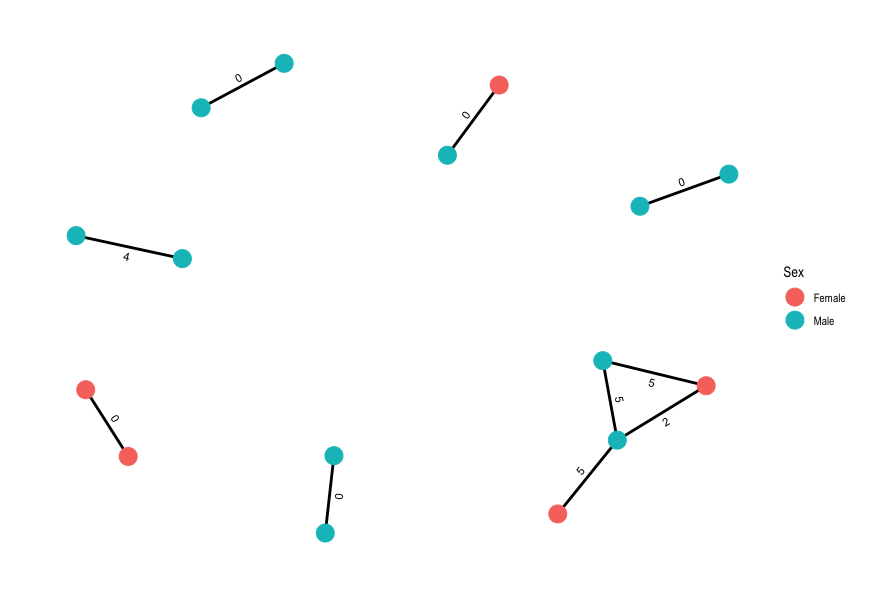

19 Building transmission networks
- Describe how pairwise SNP distances can be used to infer transmission networks.
- Recognise the importance of SNP distance thresholds and their impact in downstream results and interpretation.
- Generate pairwise SNP distance matrices from a FASTA file.
- Generate graph visualisations of transmission events.
19.1 Transmission networks in bacteria
Genomic data can be utilized to identify and understand the transmission of bacterial pathogens. In particular, SNP thresholds can be used to infer bacterial transmission networks by analyzing the genetic similarity between bacterial isolates from different individuals or sources. The underlying principle is that closely related bacterial strains will share a higher number of SNPs due to their recent common ancestry, while more distantly related strains will have accumulated more genetic differences over time.
Putative transmission can be inferred by establishing a threshold for the number of SNPs that can be considered to indicate a transmission link. This threshold can be based on epidemiological data, previous studies, or statistical models. These links can then be used to identify clusters and potential transmission network.
The SNP threshold for inferring transmission will vary depending on the organism, the population structure, and the specific context of the study. It is often determined empirically by analyzing the distribution of pairwise SNP differences among strains and identifying a natural cutoff point. Alternatively, thresholds can be based on simulation studies that incorporate information about the mutation rate of the organism and likely routes of transmission.
19.1.1 Identifying transmission networks in TB
As mentioned, the SNP threshold used to define a cluster can vary depending on the study and the population being analyzed. In TB, there have been a number of different thresholds applied when trying to identify putative transmission clusters, with the most commonly applied thresholds being 5, 10 and 12 SNPs.
For example the 12 SNP threshold is used for inferring likely transmission between a pair of TB cases by the UK Health Security Agency (UKHSA) and is the threshold applied in the publication describing the data we’ve been analysing (Walker 2014, Claasens 2022). Given the slow mutation of M. tuberculosis, a stricter threshold of 5 SNPs is usually used to infer recent transmission. In the exercise to follow, we will use both thresholds to examine the effect they have on the transmission networks we infer.
19.2 Generating a pairwise SNP distance matrix
The first step in building putative transmission networks is to calculate the pairwise SNP distances between all the samples in our dataset and we can do this by running a tool call pairsnp on the SNP alignment we used to build our phylogenetic tree.
We’ll start by activating the pairsnp software environment:
mamba activate pairsnpTo run pairsnp on aligned_pseudogenomes_masked_snps.fas, the following commands can be used:
# create output directory
mkdir -p results/transmission/
# run pairsnp
pairsnp preprocessed/snp-sites/aligned_pseudogenomes_masked_snps.fas -c > results/transmission/aligned_pseudogenomes_masked_snps.csvThe option we used is:
-c- saves thepairsnpoutput in CSV format.
The pairwise SNP matrix will be saved to the results/transmission/ directory.
Alternatively we’ve provided a script, 09-run_pairsnp.sh in the scripts directory which could be used instead with bash:
bash scripts/09-run_pairsnp.sh19.3 Calculating and plotting transmission networks in R
Now that we’ve generated a pairwise SNP distance matrix, we can use R to calculate and plot our transmission network using a pre-determined threshold of 5 SNPs to identify putative transmission events. Open RStudio then open the script 10-transmission.R in the scripts directory. Run the code in the script, going line by line (remember in RStudio you can run code from the script panel using Ctrl + Enter). As you run the code check the tables that are created (in your “Environment” panel on the top-right) and see if the SNP matrix was correctly imported. Once you reach the end of the script, you should have created a plot showing the putative transmission networks identified in the data with the nodes coloured by Sex and the pairwise SNP distances shown along the edges:

19.4 Summary
- Calculating the number of shared SNPs between genome sequences can be used to infer which isolates come from the same transmission event.
- A threshold can be set for the number of shared SNPs that is used to consider isolates to come from the same transmission event.
- The precise threshold used varies depending on the study system and population structure.
- Thresholds can be empirically determined from the data or from simulation studies.
- Generally, a lower threshold results in smaller clusters and is suitable for recent transmission events. Higher thresholds are useful for transmission events spread across a longer span of time.
- The software
pairsnpcan be used to calculate SNP distance matrices. - Transmission networks can be visualised as a graph, using data analysis software such as R.
19.5 References
Walker TM, Lalor MK, Broda A, Ortega LS, Morgan M, Parker L, Churchill S, Bennett K, Golubchik T, Giess AP, Del Ojo Elias C, Jeffery KJ, Bowler ICJW, Laurenson IF, Barrett A, Drobniewski F, McCarthy ND, Anderson LF, Abubakar I, Thomas HL, Monk P, Smith EG, Walker AS, Crook DW, Peto TEA, Conlon CP. Assessment of Mycobacterium tuberculosis transmission in Oxfordshire, UK, 2007-12, with whole pathogen genome sequences: an observational study. Lancet Respir Med. 2014. DOI
Claasens M, et al. Whole-Genome Sequencing for Resistance Prediction and Transmission Analysis of Mycobacterium tuberculosis Complex Strains from Namibia. Microbiology Spectrum. 2022. DOI